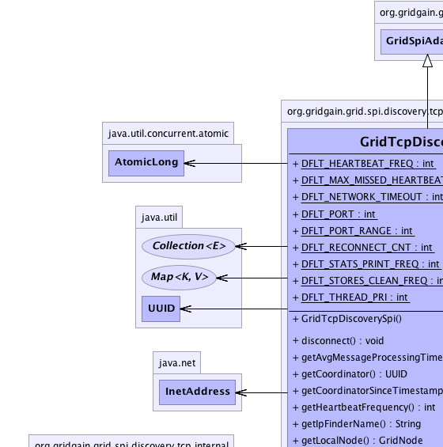
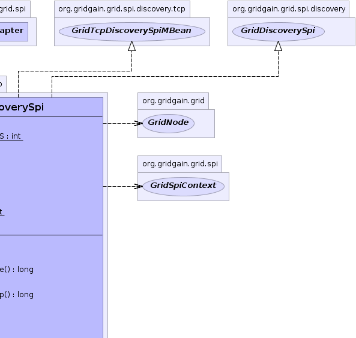
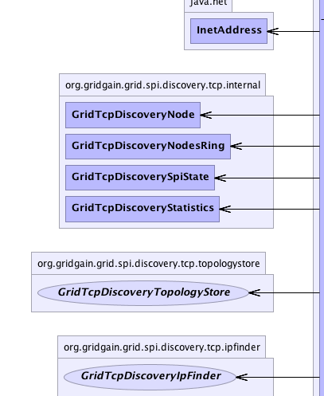
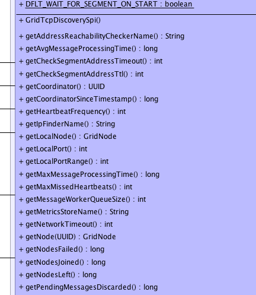
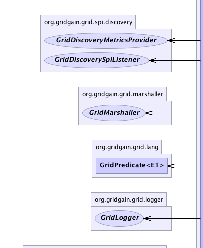
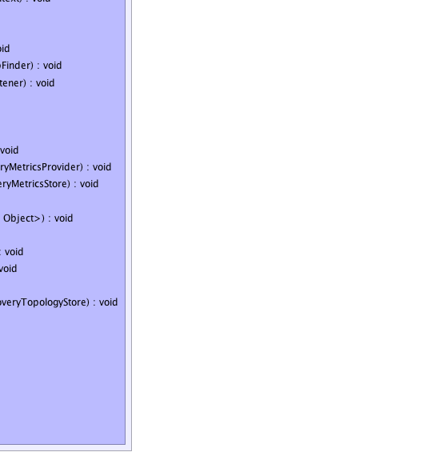

org.gridgain.grid.spi.GridSpiAdapter
org.gridgain.grid.spi.discovery.tcp.GridTcpDiscoverySpi
org.gridgain.grid.spi.GridSpiAdapter
org.gridgain.grid.spi.discovery.tcp.GridTcpDiscoverySpi
|
GridGain™ 3.1.1c
Community Edition |
|||||||||
| PREV CLASS NEXT CLASS | FRAMES NO FRAMES | |||||||||
| SUMMARY: NESTED | FIELD | CONSTR | METHOD | DETAIL: FIELD | CONSTR | METHOD | |||||||||
java.lang.Object
@GridSpiInfo(author="GridGain Systems, Inc.",
url="www.gridgain.com",
email="support@gridgain.com",
version="3.1.1c.11072011")
@GridSpiMultipleInstancesSupport(value=true)
@GridDiscoverySpiOrderSupport(value=true)
@GridDiscoverySpiReconnectSupport(value=true)
public class GridTcpDiscoverySpiDiscovery SPI implementation that uses TCP/IP for node discovery.
Node are organized in ring. So almost all network exchange (except few cases) is done across it.
At startup SPI tries to send messages to random IP taken from
GridTcpDiscoveryIpFinder about self start (stops when send succeeds)
and then this info goes to coordinator. When coordinator processes join request
and issues node added messages and all other nodes then receive info about new node.
GridTcpDiscoverySpi.setIpFinder(GridTcpDiscoveryIpFinder)).
See the following IP finder implementations for details on configuration:
org.gridgain.grid.spi.discovery.tcp.ipfinder.sharedfs.GridTcpDiscoverySharedFsIpFinder -
available in Enterprise edition only.org.gridgain.grid.spi.discovery.tcp.ipfinder.s3.GridTcpDiscoveryS3IpFinder -
available in Enterprise edition only.org.gridgain.grid.spi.discovery.tcp.ipfinder.jdbc.GridTcpDiscoveryJdbcIpFinder -
available in Enterprise edition only.GridTcpDiscoveryVmIpFinderGridTcpDiscoverySpi.setMetricsStore(GridTcpDiscoveryMetricsStore))org.gridgain.grid.spi.discovery.tcp.metricsstore.sharedfs.GridTcpDiscoverySharedFsMetricsStore -
available in Enterprise edition only.org.gridgain.grid.spi.discovery.tcp.metricsstore.s3.GridTcpDiscoveryS3MetricsStore -
available in Enterprise edition only.org.gridgain.grid.spi.discovery.tcp.metricsstore.jdbc.GridTcpDiscoveryJdbcMetricsStore -
available in Enterprise edition only.GridTcpDiscoveryVmMetricsStoreGridTcpDiscoverySpi.setTopologyStore(GridTcpDiscoveryTopologyStore))org.gridgain.grid.spi.discovery.tcp.topologystore.sharedfs.GridTcpDiscoverySharedFsTopologyStore -
available in Enterprise edition only.org.gridgain.grid.spi.discovery.tcp.topologystore.jdbc.GridTcpDiscoveryJdbcTopologyStore -
available in Enterprise edition only.GridTcpDiscoveryVmTopologyStoreGridTcpDiscoverySpi.setLocalAddress(String))GridTcpDiscoverySpi.setLocalPort(int))GridTcpDiscoverySpi.setLocalPortRange(int))GridTcpDiscoverySpi.setHeartbeatFrequency(int))GridTcpDiscoverySpi.setMaxMissedHeartbeats(int))GridTcpDiscoverySpi.setReconnectCount(int))GridTcpDiscoverySpi.setNetworkTimeout(int))GridTcpDiscoverySpi.setThreadPriority(int))GridTcpDiscoverySpi.setStoresCleanFrequency(int))GridTcpDiscoverySpi.setStatisticsPrintFrequency(int)
GridTcpDiscoverySpi spi = new GridTcpDiscoverySpi();
GridTcpDiscoveryVmIpFinder finder =
new GridTcpDiscoveryVmIpFinder();
spi.setIpFinder(finder);
GridConfigurationAdapter cfg = new GridConfigurationAdapter();
// Override default discovery SPI.
cfg.setDiscoverySpi(spi);
// Start grid.
GridFactory.start(cfg);
<bean id="grid.custom.cfg" class="org.gridgain.grid.GridConfigurationAdapter" singleton="true">
...
<property name="discoverySpi">
<bean class="org.gridgain.grid.spi.discovery.tcp.GridTcpDiscoverySpi">
<property name="ipFinder">
<bean class="org.gridgain.grid.spi.discovery.tcp.ipfinder.vm.GridTcpDiscoveryVmIpFinder" />
</property>
</bean>
</property>
...
</bean>

For information about Spring framework visit www.springframework.org
| Wiki | |
| Forum |
GridDiscoverySpi
|  |  |
|  |  |
|  |  |
| Field Summary | |
|---|---|
static int |
DFLT_HEARTBEAT_FREQ
Default heartbeat messages issuing frequency (value is 3000). |
static int |
DFLT_MAX_MISSED_HEARTBEATS
Default max heartbeats count node can miss without initiating status check (value is 3). |
static int |
DFLT_NETWORK_TIMEOUT
Default network timeout in milliseconds (value is 3000). |
static int |
DFLT_PORT
Default port to listen (value is 47500). |
static int |
DFLT_PORT_RANGE
Default local port range (value is 100). |
static int |
DFLT_RECONNECT_CNT
Default reconnect attempts count (value is 2). |
static int |
DFLT_STATS_PRINT_FREQ
Default statistics print frequency in milliseconds (value is 0). |
static int |
DFLT_STORES_CLEAN_FREQ
Default stores (IP finder clean and metrics store) frequency in milliseconds (value is 60000). |
static int |
DFLT_THREAD_PRI
Default value for thread priority (value is 7). |
| Constructor Summary | |
|---|---|
GridTcpDiscoverySpi()
|
|
| Method Summary | |
|---|---|
void |
disconnect()
Tells discovery SPI to disconnect from topology. |
long |
getAvgMessageProcessingTime()
Gets avg message processing time. |
UUID |
getCoordinator()
Gets current coordinator. |
long |
getCoordinatorSinceTimestamp()
Gets time local node has been coordinator since. |
int |
getHeartbeatFrequency()
Gets delay between heartbeat messages sent by coordinator. |
String |
getIpFinderName()
Gets GridTcpDiscoveryIpFinder (string representation). |
GridNode |
getLocalNode()
Gets local node. |
int |
getLocalPort()
Gets local TCP port SPI listens to. |
int |
getLocalPortRange()
Gets local TCP port range. |
long |
getMaxMessageProcessingTime()
Gets max message processing time. |
int |
getMaxMissedHeartbeats()
Gets max heartbeats count node can miss without initiating status check. |
int |
getMessageWorkerQueueSize()
Gets message worker queue current size. |
String |
getMetricsStoreName()
Gets GridTcpDiscoveryMetricsStore (string representation). |
int |
getNetworkTimeout()
Gets network timeout. |
GridNode |
getNode(UUID nodeId)
Gets node by ID. |
long |
getNodesFailed()
Gets failed nodes count. |
long |
getNodesJoined()
Gets joined nodes count. |
long |
getNodesLeft()
Gets left nodes count. |
long |
getPendingMessagesDiscarded()
Gets pending messages discarded count. |
long |
getPendingMessagesRegistered()
Gets pending messages registered count. |
Map<String,Integer> |
getProcessedMessages()
Gets processed messages counts (grouped by type). |
Map<String,Integer> |
getReceivedMessages()
Gets received messages counts (grouped by type). |
int |
getReconnectCount()
Gets number of connection attempts. |
Collection<GridNode> |
getRemoteNodes()
Gets collection of remote nodes in grid or empty collection if no remote nodes found. |
String |
getSpiState()
Gets current SPI state. |
int |
getStatisticsPrintFrequency()
Gets statistics print frequency. |
int |
getStoresCleanFrequency()
Gets stores (IP finder and metrics store) clean frequency. |
int |
getThreadPriority()
Gets thread priority. |
String |
getTopologyStoreName()
Gets GridTcpDiscoveryTopologyStore (string representation). |
int |
getTotalProcessedMessages()
Gets total processed messages count. |
int |
getTotalReceivedMessages()
Gets total received messages count. |
Collection<Object> |
injectables()
This method returns SPI internal instances that need to be injected as well. |
void |
onContextDestroyed()
Callback invoked prior to stopping grid before SPI context is destroyed. |
void |
onContextInitialized(GridSpiContext spiCtx)
Callback invoked when SPI context is initialized. |
boolean |
pingNode(UUID nodeId)
Pings the remote node to see if it's alive. |
void |
reconnect()
Tells discovery SPI to reconnect to topology. |
void |
setHeartbeatFrequency(int hbFreq)
Sets delay between issuing of heartbeat messages. |
void |
setIpFinder(GridTcpDiscoveryIpFinder ipFinder)
Sets IP finder for IP addresses sharing and storing. |
void |
setListener(GridDiscoverySpiListener lsnr)
Sets a listener for discovery events. |
void |
setLocalAddress(String locAddr)
Sets local host IP address that discovery SPI uses. |
void |
setLocalPort(int locPort)
Sets local port to listen to. |
void |
setLocalPortRange(int locPortRange)
Range for local ports. |
void |
setMaxMissedHeartbeats(int maxMissedHbs)
Sets max heartbeats count node can miss without initiating status check. |
void |
setMetricsProvider(GridDiscoveryMetricsProvider metricsProvider)
Sets discovery metrics provider. |
void |
setMetricsStore(GridTcpDiscoveryMetricsStore metricsStore)
Sets metrics store. |
void |
setNetworkTimeout(int netTimeout)
Sets maximum network timeout to use for network operations. |
void |
setNodeAttributes(Map<String,Object> attrs)
Sets node attributes which will be distributed in grid during join process. |
void |
setReconnectCount(int reconCnt)
Number of times node tries to (re)establish connection to another node. |
void |
setStatisticsPrintFrequency(int statsPrintFreq)
Sets statistics print frequency. |
void |
setStoresCleanFrequency(int storesCleanFreq)
Sets stores (IP finder and metrics store) clean frequency in milliseconds. |
void |
setThreadPriority(int threadPri)
Sets thread priority. |
void |
setTopologyStore(GridTcpDiscoveryTopologyStore topStore)
Sets topology store. |
void |
spiStart(String gridName)
This method is called to start SPI. |
void |
spiStop()
This method is called to stop SPI. |
String |
toString()
|
| Methods inherited from class org.gridgain.grid.spi.GridSpiAdapter |
|---|
assertParameter, configInfo, createSpiAttributeName, getAuthor, getConsistentAttributeNames, getGridGainHome, getLocalNodeId, getName, getNodeAttributes, getSpiContext, getStartTimestamp, getStartTimestampFormatted, getUpTime, getUpTimeFormatted, getVendorEmail, getVendorUrl, getVersion, registerMBean, setJson, setName, startInfo, startStopwatch, stopInfo, unregisterMBean |
| Methods inherited from class java.lang.Object |
|---|
clone, equals, finalize, getClass, hashCode, notify, notifyAll, wait, wait, wait |
| Methods inherited from interface org.gridgain.grid.spi.GridSpi |
|---|
getName, getNodeAttributes |
| Methods inherited from interface org.gridgain.grid.spi.GridSpiJsonConfigurable |
|---|
setJson |
| Methods inherited from interface org.gridgain.grid.spi.GridSpiManagementMBean |
|---|
getAuthor, getGridGainHome, getLocalNodeId, getName, getStartTimestamp, getStartTimestampFormatted, getUpTime, getUpTimeFormatted, getVendorEmail, getVendorUrl, getVersion |
| Field Detail |
|---|
public static final int DFLT_PORT
public static final int DFLT_PORT_RANGE
public static final int DFLT_NETWORK_TIMEOUT
public static final int DFLT_RECONNECT_CNT
public static final int DFLT_HEARTBEAT_FREQ
public static final int DFLT_MAX_MISSED_HEARTBEATS
public static final int DFLT_THREAD_PRI
public static final int DFLT_STORES_CLEAN_FREQ
public static final int DFLT_STATS_PRINT_FREQ
| Constructor Detail |
|---|
public GridTcpDiscoverySpi()
| Method Detail |
|---|
@GridSpiConfiguration(optional=true) public void setLocalAddress(String locAddr)
If not provided, by default a first found non-loopback address
will be used. If there is no non-loopback address available,
then InetAddress.getLocalHost() will be used.
locAddr - IP address.public int getReconnectCount()
getReconnectCount in interface GridTcpDiscoverySpiMBean@GridSpiConfiguration(optional=true) public void setReconnectCount(int reconCnt)
If not specified, default is GridTcpDiscoverySpi.DFLT_RECONNECT_CNT.
reconCnt - Number of retries during message sending.public int getNetworkTimeout()
getNetworkTimeout in interface GridTcpDiscoverySpiMBean@GridSpiConfiguration(optional=true) public void setNetworkTimeout(int netTimeout)
If not specified, default is GridTcpDiscoverySpi.DFLT_NETWORK_TIMEOUT.
netTimeout - Network timeout.public int getLocalPort()
getLocalPort in interface GridTcpDiscoverySpiMBean@GridSpiConfiguration(optional=true) public void setLocalPort(int locPort)
If not specified, default is GridTcpDiscoverySpi.DFLT_PORT.
locPort - Local port to bind.public int getLocalPortRange()
getLocalPortRange in interface GridTcpDiscoverySpiMBean@GridSpiConfiguration(optional=true) public void setLocalPortRange(int locPortRange)
GridTcpDiscoverySpi.getLocalPort() up until
GridTcpDiscoverySpi.getLocalPort() + locPortRange.
If not specified, default is GridTcpDiscoverySpi.DFLT_PORT_RANGE.
locPortRange - Local port range to bind.public int getHeartbeatFrequency()
getHeartbeatFrequency in interface GridTcpDiscoverySpiMBean@GridSpiConfiguration(optional=true) public void setHeartbeatFrequency(int hbFreq)
If not provided, default value is GridTcpDiscoverySpi.DFLT_HEARTBEAT_FREQ.
hbFreq - Heartbeat frequency in milliseconds.public int getMaxMissedHeartbeats()
getMaxMissedHeartbeats in interface GridTcpDiscoverySpiMBean@GridSpiConfiguration(optional=true) public void setMaxMissedHeartbeats(int maxMissedHbs)
If not provided, default value is GridTcpDiscoverySpi.DFLT_MAX_MISSED_HEARTBEATS.
maxMissedHbs - Max missed heartbeats.public int getStatisticsPrintFrequency()
getStatisticsPrintFrequency in interface GridTcpDiscoverySpiMBean@GridSpiConfiguration(optional=true) public void setStatisticsPrintFrequency(int statsPrintFreq)
If not set default value is GridTcpDiscoverySpi.DFLT_STATS_PRINT_FREQ.
0 indicates that no print is required. If value is greater than 0 and log is
not quiet then statistics are printed out with INFO level.
statsPrintFreq - Statistics print frequency in milliseconds.@GridSpiConfiguration(optional=false) public void setIpFinder(GridTcpDiscoveryIpFinder ipFinder)
ipFinder - IP finder.@GridSpiConfiguration(optional=true) public void setTopologyStore(GridTcpDiscoveryTopologyStore topStore)
If provided, SPI gets topology change notifications by querying store. It is recommended to provide topology store when working with large topologies.
topStore - Topology store.public int getThreadPriority()
getThreadPriority in interface GridTcpDiscoverySpiMBean@GridSpiConfiguration(optional=true) public void setThreadPriority(int threadPri)
If not provided, default value is GridTcpDiscoverySpi.DFLT_THREAD_PRI
threadPri - Thread priority.public int getStoresCleanFrequency()
getStoresCleanFrequency in interface GridTcpDiscoverySpiMBean@GridSpiConfiguration(optional=true) public void setStoresCleanFrequency(int storesCleanFreq)
If not provided, default value is GridTcpDiscoverySpi.DFLT_STORES_CLEAN_FREQ
storesCleanFreq - Stores clean frequency.public String getSpiState()
getSpiState in interface GridTcpDiscoverySpiMBeanpublic String getIpFinderName()
GridTcpDiscoveryIpFinder (string representation).
getIpFinderName in interface GridTcpDiscoverySpiMBean@Nullable public String getMetricsStoreName()
GridTcpDiscoveryMetricsStore (string representation).
getMetricsStoreName in interface GridTcpDiscoverySpiMBeannull if SPI
does not use metrics store.@Nullable public String getTopologyStoreName()
GridTcpDiscoveryTopologyStore (string representation).
getTopologyStoreName in interface GridTcpDiscoverySpiMBeannull if SPI
does not use topology store.public int getMessageWorkerQueueSize()
getMessageWorkerQueueSize in interface GridTcpDiscoverySpiMBeanpublic long getNodesJoined()
getNodesJoined in interface GridTcpDiscoverySpiMBeanpublic long getNodesLeft()
getNodesLeft in interface GridTcpDiscoverySpiMBeanpublic long getNodesFailed()
getNodesFailed in interface GridTcpDiscoverySpiMBeanpublic long getPendingMessagesRegistered()
getPendingMessagesRegistered in interface GridTcpDiscoverySpiMBeanpublic long getPendingMessagesDiscarded()
getPendingMessagesDiscarded in interface GridTcpDiscoverySpiMBeanpublic long getAvgMessageProcessingTime()
getAvgMessageProcessingTime in interface GridTcpDiscoverySpiMBeanpublic long getMaxMessageProcessingTime()
getMaxMessageProcessingTime in interface GridTcpDiscoverySpiMBeanpublic int getTotalReceivedMessages()
getTotalReceivedMessages in interface GridTcpDiscoverySpiMBeanpublic Map<String,Integer> getReceivedMessages()
getReceivedMessages in interface GridTcpDiscoverySpiMBeanpublic int getTotalProcessedMessages()
getTotalProcessedMessages in interface GridTcpDiscoverySpiMBeanpublic Map<String,Integer> getProcessedMessages()
getProcessedMessages in interface GridTcpDiscoverySpiMBeanpublic long getCoordinatorSinceTimestamp()
getCoordinatorSinceTimestamp in interface GridTcpDiscoverySpiMBean@Nullable public UUID getCoordinator()
getCoordinator in interface GridTcpDiscoverySpiMBean@GridSpiConfiguration(optional=true) public void setMetricsStore(GridTcpDiscoveryMetricsStore metricsStore)
If provided, SPI does not send metrics across the ring and uses metrics store to exchange metrics. It is recommended to provide metrics store when working with large topologies.
metricsStore - Metrics store.public GridNode getLocalNode()
getLocalNode in interface GridDiscoverySpi@Nullable public GridNode getNode(UUID nodeId)
getNode in interface GridDiscoverySpinodeId - Node ID.
null if node is not found.public Collection<GridNode> getRemoteNodes()
getRemoteNodes in interface GridDiscoverySpipublic void setListener(GridDiscoverySpiListener lsnr)
GridDiscoveryEvent for a set of all possible
discovery events.
Note that as of GridGain 3.0.2 this method is called before
method GridSpi.spiStart(String) is called. This is done to
avoid potential window when SPI is started but the listener is
not registered yet.
setListener in interface GridDiscoverySpilsnr - Listener to discovery events or null to unset the listener.public void setMetricsProvider(GridDiscoveryMetricsProvider metricsProvider)
GridDiscoveryMetricsProvider.getMetrics() method to exchange
dynamic metrics between nodes.
setMetricsProvider in interface GridDiscoverySpimetricsProvider - Provider of metrics data.public void setNodeAttributes(Map<String,Object> attrs)
setNodeAttributes in interface GridDiscoverySpiattrs - Map of node attributes.public Collection<Object> injectables()
injectables in class GridSpiAdapter
public void spiStart(String gridName)
throws GridSpiException
spiStart in interface GridSpiGridSpiException - Throws in case of any error during SPI start.gridName - Name of grid instance this SPI is being started for
(null for default grid).
public void onContextInitialized(GridSpiContext spiCtx)
throws GridSpiException
This method is invoked after GridSpi.spiStart(String) method is
completed, so SPI should be fully functional at this point. Use this
method for post-start initialization, such as subscribing a discovery
listener, sending a message to remote node, etc... }
onContextInitialized in interface GridSpionContextInitialized in class GridSpiAdapterGridSpiException - If context initialization failed (grid will be stopped).spiCtx - Spi context.
public void spiStop()
throws GridSpiException
Note that this method can be called at any point including during recovery of failed start. It should make no assumptions on what state SPI will be in when this method is called.
spiStop in interface GridSpiGridSpiException - Thrown in case of any error during SPI stop.public void onContextDestroyed()
If GridSpiAdapter is used for SPI implementation, then it will
replace actual context with dummy no-op context which is usually good-enough
since grid is about to shut down.
onContextDestroyed in interface GridSpionContextDestroyed in class GridSpiAdapterpublic boolean pingNode(UUID nodeId)
pingNode in interface GridDiscoverySpinodeId - Node Id.
true if node alive, false otherwise.
public void disconnect()
throws GridSpiException
GridSpi.spiStop() with accounting that it is not a full stop,
but disconnect before reconnect (i.e. some internal threads and
resources may be preserved on disconnect and reused on reconnect again).
disconnect in interface GridDiscoverySpiGridSpiException - If any error occurs.GridDiscoverySpi.reconnect()
public void reconnect()
throws GridSpiException
GridSpi.spiStart(String) with accounting that it is not a full start,
but reconnect (i.e. some internal threads and resources may be preserved
on disconnect and reused on reconnect again).
Prior to calling this method manager will ensure, that it is in the correct network segment.
reconnect in interface GridDiscoverySpiGridSpiException - If any error occurs.GridDiscoverySpi.disconnect()public String toString()
toString in class Object
|
GridGain™ 3.1.1c
Community Edition |
|||||||||
| PREV CLASS NEXT CLASS | FRAMES NO FRAMES | |||||||||
| SUMMARY: NESTED | FIELD | CONSTR | METHOD | DETAIL: FIELD | CONSTR | METHOD | |||||||||
|
GridGain - High Performance Cloud Computing
|
|

|
|